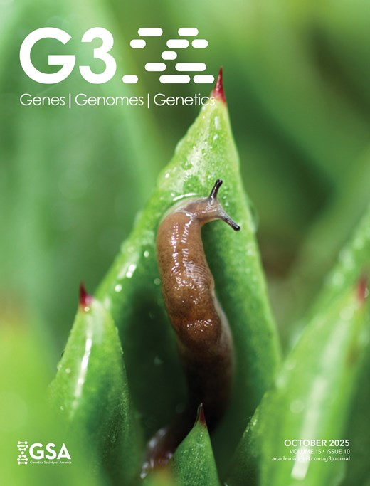

Chromosome-level genome of the slug Deroceras laeve
Miranda-Rodríguez JR, et al. (2025). The chromosome-level genome assembly of the slug Deroceras laeve facilitates its use as a comparative model of regeneration. G3: Genes, Genomes, Genetics. First author and cover article. Data at NCBI: BioProjects PRJNA1035784 and PRJNA1237345.
Learn more (Article) SlugAtlas (3D histology)